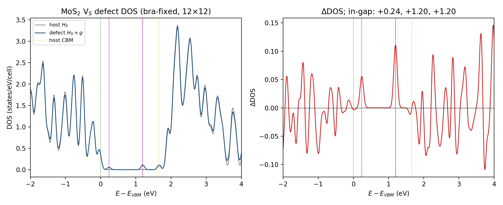
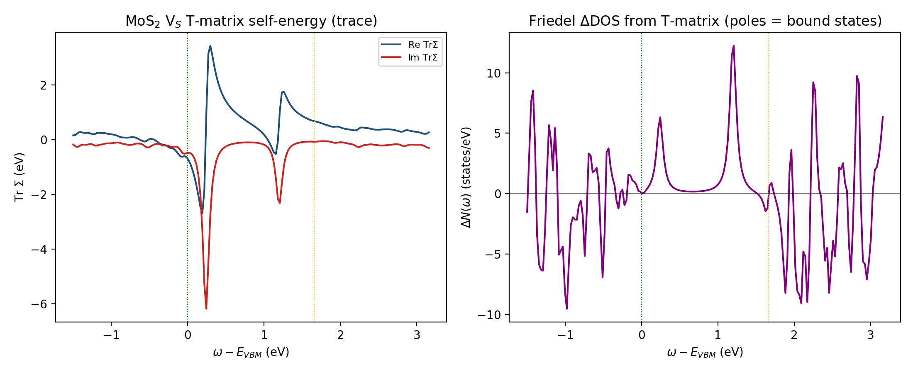
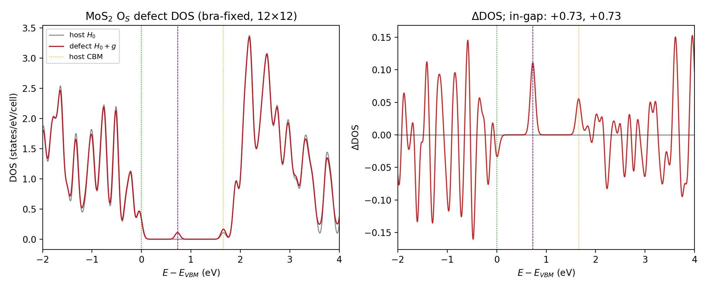
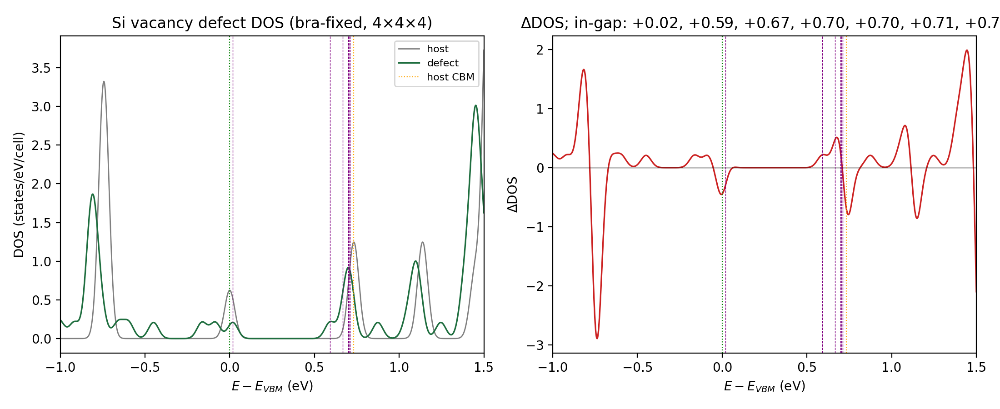

Contents
The literature electron–defect approach (e.g. eq. (S1) of the referenced works) writes a single-defect Hamiltonian
and obtains the defect density of states by diagonalizing it in the coarse-grid Bloch basis $i=(n,\mathbf k)$:
On an $N_{\mathbf k}$-point coarse grid this is equivalent to a single defect in an $N_{\mathbf k}$-cell supercell, obtained from one dense diagonalization (Koster–Slater / explicit $T$-matrix). $\Delta V$ and $M=\langle n\mathbf k|\Delta V|m\mathbf k'\rangle$ come from the EDI code (direct mode); $\varepsilon_{n\mathbf k}$ are the pristine host bands.
Two corrections got this page to its current (validated) state. Both were found by cross-checking against an independent implementation (the EDT/Sternheimer code on a separate machine).
- Normalization $g=M\,\mathrm{Ry}/N_{\mathbf k}$ — the stored $M$ is per-cell and in Rydberg; the single-defect coupling carries the $1/N_{\mathbf k}$ defect-density factor and the Ry→eV conversion. Omitting it over-weighted the perturbation ${\sim}10.6\times$.
- A bug in EDI direct mode left the bra wavefunction stale (frozen at the last $k$-point) for every $\langle n\mathbf k|\Delta V|m\mathbf k'\rangle$, making the matrix $M$ non-Hermitian ($\lVert M-M^\dagger\rVert/\lVert M\rVert\approx2$) — which broke the crystal $C_3$ symmetry and split the $e$-doublet. Fixed (see §1).
All earlier numerical tables on this page (from before these fixes) are retracted; the result below is the corrected, cross-validated one.
1. The Hermiticity bug and its fix
For the same $\mathbf k$ block, $\Delta V$ is Hermitian so $M(n,m)$ must equal $M(m,n)^\ast$. It did not. The breaking was localized step by step:
| object | $C_3$-symmetric? |
|---|---|
| $\Delta V$ cube ($V_d-V_p$, supercell grid) | ✅ exact (QE symmetrizes $V$) |
| folded $V_{\rm folded}$ (supercell → primitive) | ✅ exact |
| host bands $\varepsilon_{n\mathbf k}$ | ✅ |
| EDI-direct $M$ | ❌ broken (both local and nonlocal parts) |
The same-$\mathbf k$ block $M(\mathbf k)$ was non-Hermitian (rel $\approx2.0$, near-anti-Hermitian). Root cause: in ed_direct_from_files, the bra wavefunctions (psir_ki/becd_ki/becpc_ki) were broadcast in a pre-loop that overwrote a single buffer, leaving only the last $k$-point; the compute loop then used that stale bra for all $(\mathbf k_i,\mathbf k_f)$. So every $M(\mathbf k_i,\mathbf k_f)$ used bra $=\psi_{\mathbf k_{N}}$. (The independent EDT code reads the bra fresh for each $\mathbf k_i$ — correct.) Fix: process only pairs whose $\mathbf k_i$ is local to the MPI pool, taking the bra straight from the cache (no broadcast) and the ket from the streamed panel — zero extra communication, and the edmat is actually faster.
2. Corrected V$_S$ defect DOS
With the bra-fixed, Hermitian, $C_3$-symmetric $M$ (full 1–66 band window, 12×12 grid = 144-cell):

Host vs defect DOS (left) and Friedel ΔDOS (right), referenced to the VBM. In-gap defect states: an $a_1$ singlet and a degenerate $e$-doublet (the taller in-gap peak = 2 states).| in-gap state | $E-E_{\rm VBM}$ (eV) |
|---|---|
| $a_1$ (singlet) | +0.24 |
| $e$ (doublet, degenerate) | +1.196, +1.196 |
The $e$-doublet is degenerate (split $=0.000$ eV) and lands at +1.20 eV — in the DFT-supercell range (9×9 ≈ 1.06; 6×6 ≈ 1.15) and matching the independent EDT value below.
3. Cross-validation against an independent code (EDT)
The same coarse Bloch $M$ computed by the independent EDT implementation, and the bra-fixed EDI $M$, agree on the symmetry that matters:
| check | EDI before fix | EDI after fix | EDT (independent) |
|---|---|---|---|
| same-$\mathbf k$ block Hermiticity $\lVert M-M^\dagger\rVert/\lVert M\rVert$ | 2.0 | $\sim10^{-13}$ | $\sim10^{-14}$ |
| $M$-block spectra form $C_3$ triplets (of 144 $k$) | 0/144 | 143/144 | 143/144 |
| $e$-doublet | split 0.4 eV | +1.196 ×2 | +1.205 ×2 |
The $e$-doublet now agrees with EDT to ~0.01 eV. The residual $a_1$ offset (+0.24 here vs +0.005 in EDT) is the alignment choice — these runs use pot_align='none', EDT uses 'vacuum' (a rigid constant shift; it does not affect the degeneracy or the $e$-level).
4. Band-manifold convergence (corrected)
Slicing the host-band basis and re-diagonalizing shows the $e$-doublet converging with manifold size — with the bra-fixed $M$ the level descends toward the DFT value from above:
| manifold | $e$-doublet ($E-E_{\rm VBM}$, eV) |
|---|---|
| bands 7–17 (11) | +1.49 |
| bands 7–66 (60) | +1.21 |
| bands 1–66 (66) | +1.196 |
| DFT supercell (9×9 / 6×6) | 1.06 / 1.15 |
A larger manifold gives more complete screening, lowering the level toward the DFT range. (An earlier version of this page reported the opposite trend — the level "climbing" 0.5→0.8→1.3 eV — which was an artifact of the non-Hermitian $M$; that is retracted.)
5. Defect-induced electron self-energy (T-matrix)
The same bra-fixed coupling $g$ gives the defect self-energy in the dilute (single-site) limit, $\Sigma(\omega)=n_d\,T(\omega)$, $T(\omega)=g\,[1-G_0(\omega)g]^{-1}$, $n_d=1/N_{\mathbf k}$ — the complex, frequency-dependent complement of the (real-spectrum) diagonalization.

Tr $\Sigma(\omega)$ (left): dispersive Re $\Sigma$ and Im $\Sigma$ dips at both bound states. Friedel ΔDOS (right): two in-gap poles — the $a_1$ (+0.24) and the $e$-doublet (+1.2, ~2× higher = 2 states).The bound-state poles of $T$ ($\det[1-G_0g]=0$) coincide with the diagonalization eigenvalues, closing the two views — both the $a_1$ and the $e$-doublet:
| in-gap pole | diagonalization (DOS) | T-matrix (Friedel ΔDOS) | EDT |
|---|---|---|---|
| $a_1$ (singlet) | +0.238 | +0.243 | +0.005$^\dagger$ |
| $e$ (doublet) | +1.196 | +1.206 | +1.205 |
$^\dagger$the $a_1$ position is alignment-sensitive (pot_align='none' here vs 'vacuum' in EDT — a rigid shift); the $e$-doublet is alignment-robust. So the defect self-energy is obtained from the same $g$: diagonalization gives the poles/DOS, the T-matrix gives the full complex $\Sigma(\omega)$ (level shift from Re $\Sigma$, scattering rate from Im $\Sigma$), and the two agree on both poles. (In a smaller band window, e.g. 7–66, the shallow $a_1$ is pushed to the VBM edge; the full 1–66 window resolves it cleanly at +0.24.)
6. Controls: O$_S$ (isovalent) and the Si vacancy
| system | DFT ground truth | single-defect diag (bra-fixed) | verdict |
|---|---|---|---|
| V$_S$ | $e$ at 1.06–1.15 eV (9×9 bands) | $a_1$ + $e$ +1.196 | ✅ real defect states reproduced |
| O$_S$ | no in-gap state (9×9 bands) | spurious +0.73 doublet | ❌ method artifact |
| Si vacancy (3D) | $t_2$-derived in-gap (supercell) | cluster near CBM (+0.6…+0.7) | ✅ in-gap manifold present |

O$_S$ defect DOS: only a weak spurious +0.73 in-gap feature (cf. the strong V$_S$ $e$-peak), while DFT has none.
Si vacancy (3D control): a $t_2$-derived in-gap manifold near the CBM — a genuine defect level present in the DFT supercell too.The bra-fix makes V$_S$ correct, but O$_S$ still shows a spurious +0.73 in-gap doublet while the dilute-limit DFT (9×9, even unrelaxed) has none. This is not a code bug — it is the intrinsic limitation of the frozen, first-order, non-self-consistent $\Delta V$: applied as a static perturbation to the pristine bands it over-binds a state for the isovalent substitution, whereas the self-consistent supercell (where the other states relax) forms no such level. The Si-vacancy 3D control behaves like V$_S$ (a genuine in-gap $t_2$ manifold, present in both diag and DFT supercell).
Convergence ≠ correctness
Crucially, the spurious O$_S$ doublet is not a basis-truncation artifact — it converges in band-manifold size, just like the real V$_S$ level:
| manifold | O$_S$ in-gap doublet ($E-E_{\rm VBM}$) |
|---|---|
| 1–17 | +0.865 ×2 |
| 1–37 | +0.753 ×2 |
| 1–57 | +0.733 ×2 |
| 1–66 | +0.729 ×2 |
It descends monotonically and stabilizes at +0.73 (degenerate, $e$-like); it does not drift out of the gap as the basis grows. So both defects converge — V$_S$ to a level that DFT confirms (+1.2), O$_S$ to one DFT says does not exist (DFT: 0 in-gap). Convergence in band space is therefore not sufficient to validate a level — the frozen non-self-consistent method can produce a converged-but-spurious state. The DFT supercell (9×9 bands) is the necessary ground-truth check.
7. Setup & caveats
edmat_direct_from_file = .true. ! direct-mode Bloch M, band_ed='1-66'
filki_direct = filkf_direct = 'kfull.dat' ! 144 coarse k (12×12)
pot_align = 'none'Offline: $H=\mathrm{diag}(\varepsilon)+M\,\mathrm{Ry}/N_{\mathbf k}$, eigvalsh; in-gap = eigenvalues between host VBM and CBM.
- Frozen, unrelaxed neutral-$V_S$ $\Delta V$; absolute levels carry the usual PBE / Γ-only-SCF / coarse-$k$ uncertainties.
pot_align='none'shifts the $a_1$ vs an aligned reference (does not change the $e$-doublet).- The O$_S$ and Si-vacancy controls are being re-run with the bra-fixed code; results to follow.